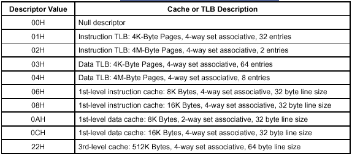

操作碼 |
指令 |
說明 |
|
0F A2 |
CPUID |
按照最初輸入 EAX 暫存器的值，將處理器標識與功能資訊返回給 EAX、EBX、ECX 及 EDX 暫存器。 |
在暫存器 EAX、EBX、ECX 及 EDX 中提供處理器標識資訊。這些資訊指出英特爾是處理器的生產商，並給出處理器的系列、型號、分級、功能資訊以及快取資訊。在 EAX 暫存器中載入的輸入值確定返回哪些資訊，具體如下表所示：
EFLAGS 暫存器中的 ID 標誌（位 21）指示是否支援 CPUID 指令。如果軟體過程可以設定與清除此標誌，則表示執行此過程的處理器支援 CPUID 指令。
CPUID 指令返回的資訊分為兩組：基本資訊與擴充套件功能資訊。在 EAX 暫存器中輸入 0 到 3（根據 IA-32 處理器型別）的值時，返回基本資訊；輸入 80000000H 到 80000004H 的值時，返回擴充套件功能資訊。擴充套件功能 CPUID 資訊是在奔騰(R) 4 處理器中引入的，
早期的 IA-32 處理器並不提供。“IA-32 處理器的最大 CPUID 源運算元”表顯示：對於實現 CPUID 指令的每個 IA-32 處理器系列，針對基本資訊與擴充套件功能資訊，處理器可識別的 CPUID 指令最大輸入值。
IA-32 處理器 |
EAX 中的最大值 |
|
基本資訊 |
擴充套件功能資訊 | |
|
早期的 Intel486™ 處理器 |
未實現 CPUID |
未實現 CPUID
|
|
後期 Intel486 處理器及 奔騰(R) 處理器 |
1H |
未實現 |
|
奔騰 Pro 與奔騰 II 處理器、英特爾(R) 賽揚(R) 處理器 |
2H |
未實現 |
|
奔騰 III 處理器 |
3H |
未實現 |
|
奔騰 4 處理器 |
2H |
80000004H |
|
英特爾至強™ 處理器 |
2H |
80000004H |
對於特定的處理器，如果輸入大於“CPUID 指令返回的資訊”中顯示的值，則返回最大有用基本資訊值對應的資訊。例如，如果將 5 輸入奔騰 4 處理器的 EAX，則返回輸入值 2 對應的資訊。返回擴充套件功能資訊的輸入值（目前，這些值是 80000000H 到 80000004H）屬於此規則的例外情況。對於奔騰 4 處理器，輸入 80000005H 以上的值時，將返回輸入值 2 對應的資訊。
CPUID 指令可以在任何特權級別執行，以序列化指令執行。序列化指令執行確保在獲取與執行下一條指令之前，前面的指令對標誌、暫存器及記憶體的任何修改都已經完成（請參閱“IA-32 英特爾(R) 體系結構軟件開發人員手冊”第 3 卷第 7 章中的“序列化指令”）。
EAX 暫存器中的輸入值為 0 時，處理器返回 CPUID 指令可識別的、用於返回基本 CPUID 資訊的 EAX 暫存器最大值（請參閱表格“IA-32 處理器的最大 CPUID 源運算元”）。供應商標識字串在 EBX、EDX 及 ECX 暫存器中返回。對於英特爾(R) 處理器，供應商標識字串是 "GenuineIntel"，如下所示：
EBX ←756e6547h（* "Genu"，G 位於 BL 的低位半位元組 *）
EDX ←49656e69h（* "ineI"，i 位於 DL 的低位半位元組 *）
ECX ←6c65746eh（* "ntel"，n 位於 CL 的低位半位元組 *）
輸入值為 1 時，處理器將版本資訊返回給 EAX 暫存器（請參閱“EAX 暫存器中的版本資訊”）。版本資訊由 IA-32 處理器系列標識、型號標識、分級標識以及處理器型別組成。英特爾奔騰 4 系列中第一個處理器的型號、系列及處理器型別如下：
型號 - 0000B
系列 - 1111B
處理器型別 - 00B
“處理器型別欄位”表給出可用的處理器型別。英特爾會根據需要發佈分級標識資訊。
型別 |
編碼 |
|
原始裝置製造商處理器 |
00B |
|
英特爾(R) OverDrive(R) 處理器 |
01B |
|
雙處理器* |
10B |
|
英特爾(R) 保留 |
11B |
 備註
備註* 不適用于 Intel486 處理器。
如果系列與/或型號欄位中的值等於或超過 FH，CPUID 指令將在 EAX 暫存器中額外產生兩個欄位：擴充套件系列欄位與擴充套件型號欄位。這裡，型號欄位或系列欄位中的值 FH 分別表示擴充套件型號或系列欄位是有效的。超出 FH 的系列與型號數值的範圍是 0FH 到 FFH，最低有效十六進制數總是 FH。
如需有關識別早期 IA-32 處理器的詳細資訊，請參閱 AP-485“英特爾處理器標識與 CPUID 指令（訂購編號 241618），以及“IA-32 英特爾體系結構軟件開發人員手冊”第 1 卷第 13 章。
EAX 中的輸入值為 1 時，會將三項彼此無關的資訊返回給 EBX 暫存器：
商標索引（EBX 的低位位元組）：此數字提供商標字串表格的入口，該表格包含 IA-32 處理器的商標字串。如需有關商標索引用途的詳細資訊，請參閱本指令說明中的後文“商標標識”。此欄位在奔騰(R) III 至強™ 處理器中引入。
CLFLUSH 指令快取線大小（EBX 的第二個位元組）- 此數字表示 CLFLUSH 指令清除的快取線大小，增量為 8 位元組。此欄位在奔騰 4 處理器中引入。
區域性 APIC ID（EBX 的高位位元組）- 此數字是一個 8 位標識，在加電期間賦給處理器上的區域性 APIC。此欄位在奔騰 4 處理器中引入。
EAX 中的輸入值為 1 時，功能資訊返回給 EDX 暫存器（請參閱“EDX 暫存器中的功能資訊”）。功能位可供操作系統或應用程式程式碼用於確定處理器可以提供哪些 IA-32 體系結構功能。“返回 EDX 暫存器的 CPUID 功能標誌”表顯示 EDX 暫存器中功能標誌的編碼。對於目前返回給 EDX 的所有功能標誌，1 表示支援相應的功能。軟體需要將 Intel 標為供應商，才可以正確解釋功能標誌。對於未來的功能標誌，軟體不應認為 1 就表示提供某項功能。

位編號 |
助記符 |
說明 |
|
0 |
FPU |
片內整合浮點單元。處理器包含 x87 FPU。 |
|
1 |
VME |
虛 8086 模式增強。虛 8086 模式增強包括：用於控制功能的 CR4.VME、用於保護模式虛擬中斷的 CR4.PVI、間接軟體中斷、軟體間接點陣圖的 TSS 擴充套件、EFLAGS.VIF 以及 EFLAGS.VIP 標誌。 |
|
2 |
DE |
除錯擴充套件。對 I/O 斷點的支援，包括用於控制功能的 CR4.DE，以及可選的 DR4 與 DR5 訪問陷阱。 |
|
3 |
PSE |
頁大小擴充套件。支援大小為 4MB 的大頁面，包括用於控制功能的 CR4.PSE、在 PDE（頁目錄專案）中定義的污損位、可選的 CR3 保留位陷阱、PDE 以及 PTE。 |
|
4 |
TSC |
時間標籤計數器。支援 RDTSC 指令，包括用於控制特權的 CR4.TSD。 |
|
5 |
MSR |
型號專用暫存器 RDMSR 與 WRMSR 指令。支援 RDMSR 與 WRMSR 指令。某些 MSR 取決於具體的實現。 |
|
6 |
PAE |
實體地址擴充套件。支援大於 32 位的實體地址：擴充套件的頁表專案格式、在頁轉譯表格中定義了額外的級別，PAE 位等於 1 時，支援 2 MB 頁而不是 4 MB 頁。32 以上的地址位的實際數目未定義，它取決於具體實現的版本。 |
|
7 |
MCE |
機器檢查異常。異常 18 定義成“機器檢查”，包括用於控制功能的 CR4.MCE。對於機器檢查錯誤的記錄、報告以及處理器關閉，此功能沒有定義特定於型號的具體實現。“機器檢查”異常處理程式可能必須根據處理器版本處理特定於型號的異常，或測試是否存在“機器檢查”功能。 |
|
8 |
CX8 |
CMPXCHG8B 指令。支援比較並交換 8 位元組（64 位） 指令（隱含鎖定，且為原子指令）。 |
|
9 |
APIC |
片內整合 APIC。處理器包含“高級可程式設計中斷控制器”(APIC)，可響應實體地址範圍從 FFFE0000H 到 FFFE0FFFH（預設值；某些處理器允許重新定位 APIC）的記憶體對映命令。 |
|
10 |
保留 |
保留 |
|
11 |
SEP |
SYSENTER 與 SYSEXIT 指令。支援 SYSENTER 與 SYSEXIT 及關聯的 MSR。 |
|
12 |
MTRR |
記憶體型別範圍暫存器。支援 MTRR。MTRRcap MSR 包含描述支援哪些記憶體型別、支援多少可變 MTRR 以及是否支援固定 MTRR 的功能位。 |
|
13 |
PGE |
PTE 全域性位。支援頁目錄項 (PDE) 與頁表格項 (PTE) 中的全域性位，指出不同程序共用且不必清除的 TLB 項。CR4.PGE 位控制此功能。 |
|
14 |
MCA |
機器檢查體系結構。支援“機器檢查體系結構”，為 P6 系列、奔騰® 4 及英特爾® 至強™ 處理器提供相容的錯誤報告機制。MCG_CAP MSR 包含描述支援多少錯誤報告 MSR 暫存器庫的功能位。 |
|
15 |
CMOV |
條件移動指令。支援條件移動指令 CMOV。此外，如果 CPUID.FPU 功能位指出存在 x87 FPU，則還支援 FCOMI 與 FCMOV 指令。 |
|
16 |
PAT |
頁屬性表格。支援“頁屬性表格”。此功能可增強“記憶體型別範圍暫存器”(MTRR)，允許操作系統通過線性地址指定 4K 粒度的記憶體屬性。 |
|
17 |
PSE-36 |
32 位頁大小擴充套件。支援擴充套件的 4 MB 頁，能夠定址 4 GB 以上的實體記憶體。此功能表示 4 MB 頁實體地址的高四位使用頁目錄項的位 13-16 編碼。 |
|
18 |
PSN |
處理器序列號。處理器支援 96 位處理器 標識號功能，並已啟用此功能。 |
|
19 |
CLFLSH |
CLFLUSH 指令。支援 CLFLUSH 指令。 |
|
20 |
保留 |
保留 |
|
21 |
DS |
除錯儲存。處理器支援將除錯資訊寫入記憶體常駐緩衝區的功能。此功能供分支跟蹤儲存 (BTS) 與基於事件的精確採樣 (PEBS) 功能使用（請參閱“IA-32 英特爾體系結構軟件開發人員手冊”第 3 卷第 15 章“除錯與效能監視”）。 |
|
22 |
ACPI |
溫度監視器與軟體控制時鐘實用程式。處理器實現的內部 MSR 可用於監視處理器溫度，並 可以在軟體的控制下，按照預定義的工作週期調整處理器效能。 |
|
23 |
MMX |
英特爾 MMX™ 技術。處理器支援“英特爾 MMX”技術。 |
|
24 |
FXSR |
FXSAVE 與 FXRSTOR 指令。支援 FXSAVE 與 FXRSTOR 指令，可以快速儲存與還原浮點上下文。存在此位 還表示，操作系統可以使用 CR4.OSFXSR 指出它支援 FXSAVE 與 FXRSTOR 指令。 |
|
25 |
SSE |
SSE。處理器支援 SSE 擴充套件指令集。 |
|
26 |
SSE2 |
SSE2。處理器支援 SSE2 擴充套件指令集。 |
|
27 |
SS |
自身嗅探。處理器能夠就發到匯流排的事務嗅探自身的快取結構，從而支援管理衝突的記憶體型別。 |
|
28 |
HTT |
超執行緒技術。處理器實現了“超執行緒”技術。 |
|
29 |
TM |
溫度監視器。處理器實現了溫度監視器的自動溫控電路 (TCC)。 |
|
30 |
保留 |
保留 |
|
31 |
PBE |
啟用未決中斷。處理器支援在處理器處於時鐘停止狀態（聲言 STPCLK#）時，使用 FERR#/PBE# 引腳通知處理器存在未決的中斷， 處理器應該返回到正常的操作以處理中斷。IA32_MISC_ENABLE MSR 中的位 10（啟用 PBE）啟用此功能。 |
輸入值為 2 時，處理器將關於處理器內部快取與 TLB 的資訊返回給 EAX、EBX、ECX 及 EDX 暫存器。這些暫存器的編碼如下：
暫存器 EAX 的最低有效位元組（暫存器 AL）表示 CPUID 指令必須使用輸入值 2 執行的次數，以獲取關於處理器快取與 TLB 的完整描述。奔騰 4 處理器系列的第一個處理器將返回 1。
每個暫存器的最高有效位（位 31）表示暫存器是包含有效資訊（設定為 0）還是保留的（設定為 1）。
如果暫存器包含有效資訊，則資訊包含在 1 個位元組的描述符中。“快取與 TLB 描述符的編碼”表顯示這些描述符的編碼。請注意，EAX、EBX、ECX 及 EDX 暫存器中描述符的順序沒有定義；也就是說，特定的位元組不一定包含特定快取或 TLB 型別的描述符。描述符可以按任何順序出現。

奔騰 4 系列的第一個處理器使用輸入值 2 執行 CPUID 指令時，將返回關於快取與 TLB 的以下資訊：
EAX 66 5B 50 01H
EBX 0H
ECX 0H
EDX 00 7A 70 00H
這些值的含義如下：
暫存器 EAX 的最低有效位元組（位元組 0）設定為 01H，表示只需使用輸入值 2 執行 CPUID 指令一次，就可以檢索到關於處理器快取與 TLB 的完整資訊。
所有四個暫存器（EAX、EBX、ECX 及 EDX）的最高有效位都設定為 0，表示每個暫存器都包含 1 個位元組的有效描述符。
暫存器 EAX 的位元組 1、2 及 3 表示處理器包含以下內容：
50H - 64 項指令 TLB，用於對映 4 KB 與 2 MB 或 4 MB 頁。
5BH - 64 項數據 TLB，用於對映 4 KB 與 4 MB 頁。
66H - 8 KB 一級數據快取，4 路快取線組聯合，64 位元組快取線大小。
暫存器 EBX 與 ECX 中的描述符有效，但包含空描述符。
暫存器 EDX 的位元組 0、1 及 2 表示處理器包含以下內容：
00H - 空描述符。
70H - 12 KB 一級程式碼快取，4 路快取線組聯合，64 位元組快取線大小。
7AH - 256 KB 二級快取，8 路快取線組聯合，分扇區的 64 位元組快取線大小。
00H - 空描述符。
為便於使用 CPUID 指令確定 IA-32 處理器的商標，這裡提供兩個功能：商標索引與商標字串。
商標索引是從奔騰 III 至強處理器開始新增到 CPUID 指令的，將來的 IA-32 處理器（包括奔騰 4 處理器）也將包含此功能。商標索引提供商標標識表格的入口，此表格由系統軟體在記憶體中維護，可以通過系統級與使用者級程式碼進行訪問。在這個表格中，每個商標索引與一個 ASCII 商標字串關聯，此字串用於確定處理器的正式英特爾系列與型號（例如，“英特爾奔騰III 處理器”）。
EAX 暫存器中的值為 1 時，執行 CPUID 指令會將商標索引返回給 EBX 的低位位元組。接著，軟體就可以使用此索引，在商標識別表格中確定處理器的商標識別字符串。此表格的第一個專案（商標索引 0）是保留的，以便向後相容不支援商標標識功能的處理器。在表格“商標索引與 IA-32 處理器商標字串之間的對映”中，列出了當前有處理器
商標標識字串與之關聯的商標索引。
建議：
將商標標識表格中包含的所有保留專案，與指明該索引是保留供未來英特爾處理器使用的商標字串相關聯。
將軟體準備成能夠恰當處理保留的商標索引。
商標索引 |
商標字串 |
|
0 |
此處理器不支援商標標識功能 |
|
1 |
賽揚(R) 處理器† |
|
2 |
奔騰(R) III 處理器† |
|
3 |
英特爾(R) 奔騰 III至強™ 處理器 |
|
4 – 7 |
保留供未來處理器使用 |
|
8 |
英特爾奔騰 4 處理器 |
|
9 – 255 |
保留供未來處理器使用 |
† 表示在奔騰 III 至強處理器之後引入的這些處理器版本。
商標字串功能是 CPUID 指令的擴充套件，在奔騰 4 處理器中引入。通過使用此功能，CPUID 指令可以將 ASCII 商標標識字串與處理器的最高工作頻率返回給 EAX、EBX、ECX 及 EDX 暫存器。（請注意，返回的頻率是處理器經檢驗合格的最高工作頻率，
而不是處理器的當前工作頻率）。
要使用商標字串功能，必須執行 CPUID 指令三次：第一次在 EAX 暫存器中輸入值 8000002H，第二次輸入值 80000003，第三次輸入值 80000004H。
在體系結構上，商標字串定義成 48 位元組長：頭 47 個位元組包含 ASCII 字元，第 48 個位元組定義為空 (0)。爲了簡化實現，字串可能為右對齊（前面加空格）。對於每個輸入值（EAX 為 80000002H、80000003H 或 80000004H），CPUID 指令將 16 位元組的商標字串返回給 EAX、EBX、ECX 及 EDX 暫存器。處理器的實現可能會返回少於 47 個的 ASCII 字元，在這種情況下，字串以空值結尾，處理器將返回 CPUID 輸入值為 80000002H、80000003H 及 80000004H 的有效數據。
“第一個奔騰 4 處理器返回的處理器商標字串”表顯示奔騰 4 處理器系列的第一個處理器返回的商標字串。
備註商標字串中給出頻率時，它是處理器的最高合格頻率，而不是處理器目前執行的實際頻率。
以下操作程式可用於檢測商標字串功能：
使用 EAX 的輸入值 80000000H 執行 CPUID 指令。
如果 ((EAX_Return_Value) AND (80000000H) ≠0)，則處理器支援擴充套件的 CPUID 功能，並且 EAX 包含支援的最大擴充套件功能輸入值。
如果 EAX_Return_Value ≥80000004H，則 CPUID 指令支援商標字串功能。

要使用 CPUID 指令確定 IA-32 處理器，商標標識軟體
應該使用以下商標標識技術（按優先順序的降序排列）：
處理器商標字串
處理器商標索引與軟體提供的商標字串表格。
基於由 CPUID 指令返回的型別、系列、型號、分級以及快取資訊組成的結構的表格。
IA-32 體系結構相容性。
Intel486 處理器的早期型號以及早於 Intel486 處理器任何 IA-32 處理器都不支援 CPUID 指令。
CASE (EAX) OF
EAX =0:
EAX ←highest basic function input value understood by CPUID;
EBX ←Vendor identification string;
EDX ←Vendor identification string;
ECX ←Vendor identification string;
BREAK;
EAX =1H:
EAX[3:0] ←Stepping ID;
EAX[7:4] ←Model;
EAX[11:8] ←Family;
EAX[13:12] ←Processor type;
EAX[15:14] ←Reserved;
EAX[19:16] ←Extended Model;
EAX[23:20] ←Extended Family;
EAX[31:24] ←Reserved;
EBX[7:0] ←Brand Index;
EBX[15:8] ←CLFLUSH Line Size;
EBX[16:23] ←Reserved;
EBX[24:31] ←Initial APIC ID;
ECX ←Reserved;
EDX ←Feature flags; (* See Figure 3-4 *)
BREAK;
EAX =2H:
EAX ←Cache and TLB information;
EBX ←Cache and TLB information;
ECX ←Cache and TLB information;
EDX ←Cache and TLB information;
BREAK;
EAX =3H:
EAX ←Reserved;
EBX ←Reserved;
ECX ←ProcessorSerialNumber[31:0];
(* Pentium III processors only, otherwise reserved *)
EDX ←ProcessorSerialNumber[63:32];
(* Pentium III processors only, otherwise reserved *
BREAK;
EAX =80000000H:
EAX ←highest extended function input value understood by CPUID;
EBX ←Reserved;
ECX ←Reserved;
EDX ←Reserved;
BREAK;
EAX =80000001H:
EAX ←Extended Processor Signature and Feature Bits (*Currently Reserved*);
EBX ←Reserved;
ECX ←Reserved;
EDX ←Reserved;
BREAK;
EAX =80000002H:
EAX ←Processor Name;
EBX ←Processor Name;
ECX ←Processor Name;
EDX ←Processor Name;
BREAK;
EAX =80000003H:
EAX ←Processor Name;
EBX ←Processor Name;
ECX ←Processor Name;
EDX ←Processor Name;
BREAK;
EAX =80000004H:
EAX ←Processor Name;
EBX ←Processor Name;
ECX ←Processor Name;
EDX ←Processor Name;
BREAK;
DEFAULT: (* EAX >highest value recognized by CPUID *)
EAX ←Reserved; (* undefined*)
EBX ←Reserved; (* undefined*)
ECX ←Reserved; (* undefined*)
EDX ←Reserved; (* undefined*)
BREAK;
ESAC;
影響的標誌
無。
異常（所有操作模式）
無。
備註對於不支援 CPUID 指令的早期 IA-32 處理器，執行此指令會導致產生操作碼無效 (#UD) 異常。